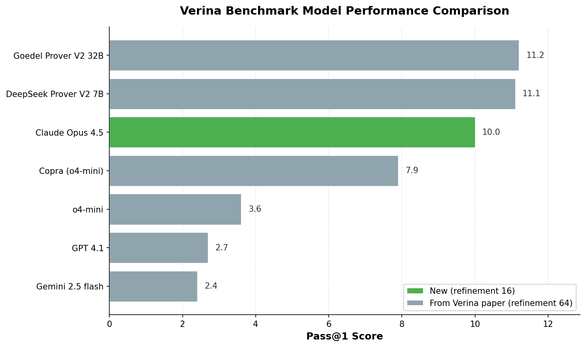

Running Claude Opus 4.5 on the Verina Benchmark
A couple of months ago, I came across the Verina Benchmark for verifiable code generation. It measures how well LLMs can generate machine-checkable proofs of program correctness. In this benchmark, the model is given a Lean program and a specification, and must produce a proof that the Lean verifier accepts.
Since the benchmark and its accompanying paper were published, new frontier models such as Claude Opus 4.5 have been released. I was curious how the latest model would perform, so I ran the benchmark on Opus 4.5.
Results
In short, LLMs aren’t great at writing Lean proofs out the box.

In the original evaluation by the Verina authors, the best-performing models were specialized provers like Goedel Prover V2 and Deepseek Prover V2, which solved about 11% of the benchmark’s 189 problems. The best general-purpose model, O4-mini, scored 3.6%.
A key detail is that the authors allowed 64 refinements, i.e., up to 64 iterations where the model can revise its proof after seeing Lean’s error messages, and only the final attempt is scored.
In my Opus 4.5 run, I allowed only 16 refinements (for cost reasons). It’s mildly encouraging that the best general-purpose models are now roughly on par with the earlier specialized prover models, despite having 4× fewer refinement rounds.
Open Question: Interactive vs Automated Theorem Provers
The results underscore a lingering question I’ve had for a while now – are interactive theorem provers (e.g., Lean), the best solution to verifiable code generation, in comparison to SMT-based automated theorem provers (e.g., Dafny)?
Take Verina problem basic_103. The program takes an integer array arr of length at least 8, then sets arr[4] := arr[4] + 3, and arr[7] := 516. The goal is to prove that the output is such that:
arr[4]is increased by 3 relative to the input,arr[7]is 516, and- all other indices are unchanged.
This is a trivial property, but it expands into a lengthy proof in Lean, which Opus 4.5 could not find.
Meanwhile, such an obligation can be easily discharged by an SMT solver, and hence this program can be verified by SMT-based automated theorem provers like Dafny without any human or LLM input.
This is a deep topic and there’s a lot more to say here. I’ll come back to it in a future post.